QTL mapping pipeline
Introduction
We take a modular approach to call QTLs:
- Estimate a mean and a dispersion for each individual
- Treat the mean/dispersion as continuous phenotypes and perform QTL mapping
Here, we solve (2).
- We reproduce eQTLs called on the bulk RNA-Seq
- We call mean/variance/CV/Fano QTLs using sample moments
- We call mean/variance/CV/Fano QTLs using ZINB parameters
- We test replication/overlap between different QTL calls
Implementation
def cpm(x): return pd.DataFrame(pandas2ri.ri2py(edger.cpm(numpy2ri(x.values), log=True)), columns=x.columns, index=x.index) def qqnorm(x): """Wrap around R qqnorm""" return np.asarray(rpy2.robjects.r['qqnorm'](numpy2ri(x))[0]) def bh(x): """Wrap around p.adjust(..., method='fdr')""" return np.asarray(rpy2.robjects.r['p.adjust'](numpy2ri(x), method='fdr'))
gene_info = (pd.read_table('/project2/mstephens/aksarkar/projects/singlecell-qtl/data/scqtl-genes.txt.gz') .set_index('gene') .query('source == "H. sapiens"') .query('chr != "hsX"') .query('chr != "hsY"') .query('chr != "hsMT"'))
with sqlite3.connect('/project2/mstephens/aksarkar/projects/singlecell-qtl/browser/browser.db') as conn: gene_info.to_sql('gene_info', conn, index=True, if_exists='replace')
def qtltools_format(row, prefix='chr'): row['#Chr'] = '{}{}'.format(prefix, row['chr'][2:]) row['gid'] = row.name row['pid'] = row.name # Important: qtltools expects TSS start/end if row['strand'] == '+': row['end'] = row['start'] else: row['start'] = row['end'] return row.loc[['#Chr', 'start', 'end', 'pid', 'gid', 'strand']] def write_pheno_file(pheno, gene_info, output_file, holdout=True, **kwargs): if holdout: genes = gene_info.loc[gene_info.apply(lambda x: bool(int(x['chr'][2:]) % 2), axis=1)] else: genes = gene_info (genes .apply(qtltools_format, **kwargs, axis=1) .merge(pheno, left_index=True, right_index=True) .to_csv(output_file, sep='\t', header=True, index=False, index_label=False))
export input=$input sbatch --partition=$partition --wait #!/bin/bash module load bedtools bedtools sort -header -i $input | bgzip >$input.gz tabix -f -p bed $input.gz
export pheno=$pheno export geno=$geno export op=$op sbatch --partition=$partition -a 1-100 -J $pheno-qtl --wait #!/bin/bash source activate scqtl qtltools cis --vcf $geno --bed $pheno.bed.gz $op --chunk $SLURM_ARRAY_TASK_ID 100 --out $pheno-qtl.$SLURM_ARRAY_TASK_ID.txt --seed 0
def _read_helper(pheno, columns): file_names = ['{}-qtl.{}.txt'.format(pheno, i) for i in range(1, 101)] res = (pd.concat([pd.read_table(f, header=None, sep=' ') for f in file_names if os.path.exists(f) and os.path.getsize(f) > 0]) .rename(columns={i: x for i, x in enumerate(columns)}) .dropna() .sort_values('p_beta')) res['p_adjust'] = bh(res['p_beta']) res['fdr_pass'] = res['p_adjust'] < 0.1 return res def read_fastqtl_output(pheno): columns = ['gene', 'num_snps', 'a', 'b', 'dummy', 'id', 'distance', 'p', 'beta', 'p_empirical', 'p_beta'] res = _read_helper(pheno, columns) # Drop the gene version number res['gene'] = res['gene'].apply(lambda x: x.split('.')[0]) res['chr'] = res['id'].apply(lambda x: x.split('.')[1]) res['pos'] = res['id'].apply(lambda x: x.split('.')[2]) res['id'] = res['id'].apply(lambda x: x.split('.')[0]) return res def read_qtltools_output(pheno): columns = ['gene', 'chr', 'start', 'end', 'strand', 'num_vars', 'distance', 'id', 'var_chr', 'var_start', 'var_end', 'df', 'dummy', 'a', 'b', 'p_nominal', 'beta', 'p_empirical', 'p_beta'] res = _read_helper(pheno, columns) res['chr'] = res['var_chr'] res['pos'] = res['var_start'] res['id'] = res['id'].apply(lambda x: x.split('.')[0]) return res def read_nominal_pass(f): isf = st.chi2(1).isf result = pd.read_table(f, sep=' ', header=None) result.columns = ['gene', 'chr', 'start', 'end', 'strand', 'n', 'distance', 'id', 'var_chr', 'var_start', 'var_end', 'p_nominal', 'beta', 'top'] result['z'] = np.sign(result['beta']) * np.sqrt(isf(result['p_nominal'])) return result
def plot_approx_permutation(df): plt.clf() plt.gcf().set_size_inches(6, 6) plt.scatter(df['p_empirical'], df['p_beta'], s=1, c='k') plt.plot([0, 1], [0, 1], c='r', ls='--') plt.xlabel('Empirical p-value') plt.ylabel('Approximate p-value')
def qqplot(qtls): N = qtls.shape[0] # 95% bootstrap CI ci = -np.log10(np.percentile(np.sort(np.random.uniform(size=(100, N)), axis=1), [5, 95], axis=0)) grid = -np.log10(np.arange(1, 1 + N) / N) plt.clf() plt.gcf().set_size_inches(6, 6) plt.scatter(grid, -np.log10(qtls['p_beta']), s=1, c='k') plt.plot([0, np.log10(qtls.shape[0])], [0, np.log10(qtls.shape[0])], c='r', ls='--') plt.plot(grid, ci[0], c='r', ls=':') plt.plot(grid, ci[1], c='r', ls=':') plt.xlabel('Expected $-\log_{10}(p)$') _ = plt.ylabel('Observed $-\log_{10}(p)$')
def parse_vcf_dosage(record): geno = [float(g) for g in record[9:]] return pd.Series(geno) def extract_qtl_gene_pair(qtl_gene_df, pheno_df, dosages): """Return aligned genotype and phenotype matrix for each QTL-gene pair in qtl_gene_df""" common_phenos, common_qtls = pheno_df.align(qtl_gene_df.set_index('gene'), join='inner', axis=0) # Important: individual IDs do not have the NA prefix in the VCF header = ['NA{}'.format(x) for x in pd.read_table(dosages, nrows=1, header=0).columns[9:]] genotypes = tabix.open(dosages) X, Y = (common_qtls .apply(lambda x: parse_vcf_dosage(next(genotypes.query(x['chr'], int(x['var_start']) - 1, int(x['var_start'])))), axis=1) .rename(columns={i: ind for i, ind in enumerate(header)}) .align(common_phenos, join='inner', axis=None)) return X, Y def replication_tests(X, Y, C=None): """Return a DataFrame containing replication p-values X - centered dosage matrix (num_genes, num_individuals) Y - phenotype matrix (num_genes, num_individuals) C - confounder matrix (num_confounders, num_individuals) """ p, n = X.shape assert Y.shape == (p, n) if C is not None: assert C.shape[1] == n C = np.array(C).T C = C - C.mean(axis=0) # Construct the annihilator matrix I - X X^+ M = np.eye(n) - C.dot(np.linalg.pinv(C)) result = [] _sf = st.chi2(1).sf for (_, x), (name, y) in zip(X.iterrows(), Y.iterrows()): if np.isclose(x.std(), 0): print('Skipping {}'.format(name)) continue x = x.values.copy().reshape(-1, 1) x -= x.mean() y = y.values.copy().ravel() y -= y.mean() if C is not None: y = M.dot(y) y -= y.mean() beta, rss, *_ = np.linalg.lstsq(x, y, rcond=-1) sigma2 = rss / y.shape[0] se = sigma2 / x.T.dot(x).ravel() pval = _sf(np.square(beta / se)) result.append({'gene': name, 'beta': beta[0], 'se': se[0], 'p': pval.ravel()[0]}) return pd.DataFrame.from_dict(result) def pairwise_replication(qtls, phenos, ticks): repl_rate = np.ones((len(phenos), len(phenos))) for i, ki in enumerate(phenos): for j, kj in enumerate(phenos): if i == j: continue q, p = qtls[ki][0], qtls[kj][1] X, Y = extract_qtl_gene_pair(q[q['fdr_pass']], p, dosages='/scratch/midway2/aksarkar/singlecell/reproduce-yang/YRI_SNPs_2_IPSC.txt.gen.gz') if X.empty: continue replication = q.merge( replication_tests(X, Y), on='gene', suffixes=['_1', '_2'])[['gene', 'id', 'beta_1', 'beta_2', 'p']] replication['fdr_pass'] = bh(replication['p']) < .1 replication['replicated'] = replication.apply(lambda x: x['fdr_pass'] and x['beta_1'] * x['beta_2'] > 0, axis=1) repl_rate[i, j] = replication['replicated'].sum() / replication.shape[0] return pd.DataFrame(100 * repl_rate, columns=ticks, index=ticks)
def bootstrap_se(X, Y, C=None, num_bootstraps=100, seed=0): np.random.seed(seed) beta = {} for i in range(num_bootstraps): b = np.random.choice(X.shape[1], size=X.shape[1], replace=True) if C is not None: beta[i] = replication_tests(X.iloc[:,b], Y.iloc[:,b], C.iloc[:,b]).set_index('gene')['beta'] else: beta[i] = replication_tests(X.iloc[:,b], Y.iloc[:,b]).set_index('gene')['beta'] return pd.DataFrame.from_dict(beta).agg(np.std, axis=1)
def _fit_lm(x, y): n, p = x.shape assert y.shape == (n, 1) y -= y.mean() x -= x.mean(axis=0) beta = x.T.dot(y) / np.var(x, axis=0).values.reshape(-1, 1) return beta def estimate_beta_se(genes, dosages, gene_info, covars=None, window=100000, n_bootstrap=100, seed=0): """Estimate beta via OLS and SE via bootstrap genes - dataframe (num_genes, num_individuals) dosages - VCF file name gene_info - dataframe (see read_gene_info) covars - dataframe (num_covars, num_individuals) """ with gzip.open(dosages, 'rt') as f: for line in f: if line.startswith('#CHROM'): header = line.split()[9:] break dosages = tabix.open(dosages) if covars is not None: covars, genes = covars.align(genes, axis='columns', join='inner') _, n = covars.shape covars = covars.values.T M = np.eye(n) - covars.dot(np.linalg.pinv(covars)) result = [] for gene, Y in genes.iterrows(): if gene in gene_info.index: record = gene_info.loc[gene] if record['strand'] == '+': X = dosages.query('chr{}'.format(record['chr'][2:]), record['start'] - window, record['start'] + window) else: X = dosages.query('chr{}'.format(record['chr'][2:]), record['end'] - window, record['end'] + window) X = list(X) meta = [row[2] for row in X] X = pd.DataFrame([parse_vcf_dosage(row) for row in X]) X.index = meta X.columns = header X, Y = X.align(Y, axis='columns', join='inner') if covars is not None: Y = M.dot(Y - Y.mean()) X = X.transform(lambda x: x - x.mean(), axis=1) beta = [_fit_lm(X.T, Y.reshape(-1, 1))] np.random.seed(seed) for _ in range(n_bootstrap): B = np.random.choice(n, size=n, replace=True) beta.append(_fit_lm(X.iloc[:,B].T, Y[B].reshape(-1, 1))) result.append(pd.DataFrame({'gene': gene, 'snp': meta, 'beta': beta[0].values.ravel(), 'se': np.std(np.ma.masked_invalid(np.hstack(beta[1:])), axis=1)})) return pd.concat(result)
Preliminaries
Test validity of approximate permutation test
qtltools tries to calibrate false discovery rates using the following
procedure:
- For each gene, permute the genotype data to estimate the null distribution of the p-values
- Fit a beta distribution to the permuted p-values via ML
- Compute the lower tail probability of the observed p-value, assuming it was generated from the fitted beta distribution
- Apply FDR correction on the set of lower tail probabilities (across all genes)
Test whether the beta approximation is appropriate for our sample size by subsetting GEUVADIS. Take all genes on chromosome 1.
geuvadis = [] for chunk in pd.read_table('/project/compbio/geuvadis/analysis_results/GD462.GeneQuantRPKM.50FN.samplename.resk10.txt.gz', chunksize=100): geuvadis.append(chunk.query('Chr == "1"')) geuvadis = pd.concat(geuvadis) geuvadis = geuvadis.set_index(geuvadis['Gene_Symbol'].apply(lambda x: x.split('.')[0]))
First, replicate the result in Delaneau et al 2017 by using all 462 individuals from GEUVADIS.
pd.Series(geuvadis.columns).sort_values().to_csv('/scratch/midway2/aksarkar/singlecell/geuvadis/geuvadis-subset.txt', header=None, index=None)
Write out the phenotype file for qtltools. Important: GEUVADIS VCFs code
chromosome without chr.
write_pheno_file(geuvadis, gene_info, '/scratch/midway2/aksarkar/singlecell/geuvadis/test.bed', prefix='')
Index the phenotype file. Important: # sorts before c, but after 1.
Submitted batch job 44542169
Perform SNP QC in plink.
sbatch --partition=broadwl --mem=2G --wait #!/bin/bash plink --memory 2000 --geno 0.01 --maf 0.05 --keep-fam /scratch/midway2/aksarkar/singlecell/geuvadis-subset.txt --vcf /project/compbio/geuvadis/genotypes/GEUVADIS.chr1.PH1PH2_465.IMPFRQFILT_BIALLELIC_PH.annotv2.genotypes.vcf.gz --recode vcf-iid --out geuvadis-chr1 bgzip -f geuvadis-chr1.vcf tabix -f -p vcf geuvadis-chr1.vcf.gz
Submitted batch job 44541229
Run qtltools.
Submitted batch job 44685856
Read the results.
geuvadis_qtls = read_qtltools_output('geuvadis/test')
Check the beta approximation to the permutation p-values.
plot_approx_permutation(geuvadis_qtls)

Plot the QQ plot
qqplot(geuvadis_qtls)

Repeat the analysis after subsetting to 54 individuals.
np.random.seed(0) subset = np.random.choice([x for x in geuvadis.columns], size=54, replace=False) pd.Series(subset).sort_values().to_csv('/scratch/midway2/aksarkar/singlecell/geuvadis-subset.txt', header=None, index=None)
write_pheno_file(geuvadis[subset], gene_info, '/scratch/midway2/aksarkar/singlecell/geuvadis/test.bed', prefix='')
Submitted batch job 44544326
Submitted batch job 44544018
Submitted batch job 44544375
geuvadis_54_qtls = read_qtltools_output('geuvadis/test') plot_approx_permutation(geuvadis_54_qtls)

Reproduce bulk eQTL calls
The iPSC bulk eQTLs were called in Banovich et al 2018.
eQTLs in iPSCs and LCLs: We transformed expression levels to a standard normal within each individual. We next accounted for unknown confounders by removing principal components from the LCL (15 PCs) and iPSC (10 PCs) data. Genotypes were obtained using impute2 as described previously (Li et al. 2016). We only considered variants within 50 kb of genes. To identify association between genotype and gene expression, we used FastQTL (Ongen et al. 2016). After the initial regression, a variable number of permutations were performed to obtain a gene-wise adjusted P-value (Ongen et al. 2016). To identify significant eQTLs, we used Storey's q-value (Storey and Tibshirani 2003) on the adjusted P-values. Genes with a q-value less than 0.1 are considered significant.
Important notes:
The text doesn't state how expression level was quantified (it was the ratio of mapped reads to total reads after correction by
WASP).WASP(de Geijin et al 2015) fits quartic polynomials \(f, g\) which predict the total read count per region \(T^*_{ij}\) from the observed read count \(x_{ij}\) and GC content \(w_j\) by maximizing the likelihood of the observed read counts:\[ x_{ij} \sim \mathrm{Pois}(T^*_{ij}) \]
\[ T^*_{ij} = \exp\left(f\left(\sum_i x_{ij}\right)\right) g(w_j) \]
Using log CPM (under the assumption that we never compare genes to each other) yields 1279 eQTLs (89%).
fastqtlexpects gene start/end, and only takes cis-SNPs around the start ignoring strand. The code uses GENCODE v19 exons to define the start/end.qtltoolsexpects TSS and strand, but doesn't use strand information in cis-eQTL mapping. Using the start coordinate of the provided expression matrix as TSS yields 1265 eQTLs (87%).- The methods section of Degner et al 2012 states data is standardized across individuals, and quantile normalized within individuals. The equation contradicts the text, but the code follows the text.
- The code analyzes 100kb windows, contradicting the text.
- Not every gene in the input appears in the output, and changing the number of chunks changes the number of genes lost.
- QTL-gene pairs passed the Benjamini-Hochberg procedure, not Storey's procedure.
sbatch --partition=broadwl -a 1-25 #!/bin/bash source activate scqtl fastqtl -V YRI_SNPs_2_IPSC.txt.gen.gz -B fastqtl_qqnorm_RNAseq_run.fixed.txt.gz -C fasteqtl_PC_RNAseq_run.fixed.txt -O bulk-qtl.$SLURM_ARRAY_TASK_ID.txt --exclude-samples file_IPSC.excl --window 1e5 --permute 1000 10000 --chunk $SLURM_ARRAY_TASK_ID 25 --seed 1475098497
Submitted batch job 44546060
Read fastqtl output.
bulk_qtls = read_fastqtl_output('reproduce-yang/bulk')
Write out the summary stats with headers.
bulk_qtls.to_csv('/project2/mstephens/aksarkar/projects/singlecell-qtl/data/scqtl-mapping/bulk.txt.gz', sep='\t', index=None, compression='gzip')
Compare qtltools to fastqtl. The input files need to be modified.
sbatch --partition=broadwl --wait #!/bin/bash zcat fastqtl_qqnorm_RNAseq_run.fixed.txt.gz | awk -vOFS='\t' 'NR == 1 {$4 = "pid" OFS "gid" OFS "strand"; for (i = 5; i <= NF; i++) {$i = "NA"$i} print} NR > 1 {$4 = $4 OFS $4 OFS "+"; $3 = $2; print}' >test.bed awk 'NR == 1 {for (i = 2; i <= NF; i++) {$i = "NA"$i}} {print}' fasteqtl_PC_RNAseq_run.fixed.txt >covars.txt
Submitted batch job 44979838
Check whether the FDR is properly controlled by permuting.
np.random.seed(0) permutation = bulk_expr.columns.values.copy() np.random.shuffle(permutation[5:]) bulk_expr.columns = permutation covars = (pd.read_table('/scratch/midway2/aksarkar/singlecell/reproduce-yang/covars.txt', sep=' ') .rename(columns={k: v for k, v in zip(bulk_expr.columns, permutation)})) covars.to_csv('/scratch/midway2/aksarkar/singlecell/reproduce-yang/covars.txt', sep=' ', index=False)
Fix the TSS by rewriting the phenotype file.
bulk_expr = pd.read_table('/scratch/midway2/aksarkar/singlecell/reproduce-yang/test.bed', index_col=3) bulk_expr.index = [x.split('.')[0] for x in bulk_expr.index] write_pheno_file(bulk_expr.iloc[:,5:], gene_info, '/scratch/midway2/aksarkar/singlecell/reproduce-yang/test.bed', holdout=False)
Index the phenotype file.
Submitted batch job 44683584
Run qtltools.
Submitted batch job 44683586
Read qtltools output
bulk_qtls = read_qtltools_output('reproduce-yang/test')
Check the beta approximation.
plot_approx_permutation(bulk_qtls)

Plot a QQ plot of adjusted p-values.
qqplot(bulk_qtls)

Take QTLs with \(\mathrm{FDR} < 0.1\).
bulk_qtls['fdr_pass'].sum()
1441
Recall bulk eQTLs from log CPM
Read the counts matrix.
bulk_counts = (pd.read_table('/project2/gilad/singlecell-qtl/bulk/counts_RNAseq_iPSC.txt', sep=' ', index_col=0) .rename(columns=lambda x: 'NA{}'.format(x)) .rename(index=lambda x: x.split('.')[0]))
Throw out individuals.
with open('/scratch/midway2/aksarkar/singlecell/reproduce-yang/file_IPSC.excl') as f: for line in f: k = 'NA{}'.format(line.strip()) if k in bulk_counts: del bulk_counts[k]
Normalize the counts matrix by computing log CPM. Normalizing by length is unnecessary because we only ever compare counts for the same gene across individuals.
bulk_log_cpm = (cpm(bulk_counts) .transform(lambda x: (x - x.mean()) / x.std(), axis=1) .apply(qqnorm, axis=0))
Compute expression PCs.
covars = pd.DataFrame(skd.PCA(n_components=10).fit(bulk_log_cpm).components_, columns=bulk_log_cpm.columns) covars.index.name = 'id' covars.to_csv('/scratch/midway2/aksarkar/singlecell/recall-bulk/log-cpm-covars.txt', sep='\t')
Check whether the false discovery rate is properly controlled by permuting the data.
Write the phenotype matrix in qtltools format. Use the annotation data
(ENSEMBL 75) in this repository to be consistent with the single cell
data. Important: this loses 1716 genes (are they pseudogenes?)
write_pheno_file( bulk_log_cpm, gene_info, holdout=False, output_file='/scratch/midway2/aksarkar/singlecell/recall-bulk/bulk-log-cpm.bed')
Index the phenotype file.
Submitted batch job 44681764
Ensure the dosage file follows the VCF standard. Add the prefix NA to sample IDs.
sbatch --partition=broadwl #!/bin/bash zcat YRI_SNPs_2_IPSC.txt.gen.gz | awk -vOFS='\t' 'BEGIN {print "##fileformat=VCFv4.2"; print "##FORMAT=<ID=DS,Number=1,Type=Float>"} NR == 1 {for (i = 10; i <= NF; i++) {$i = "NA"$i}} {print}' | bgzip >yri-dosages.vcf.gz tabix yri-dosages.vcf.gz
Submitted batch job 44546926
Run qtltools
Submitted batch job 44681768
Read the output. Important: this loses 201 genes (is this a bug in
qtltools)?
bulk_cpm_qtls = read_qtltools_output('recall-bulk/bulk-log-cpm')
Check the beta approximation.
plot_approx_permutation(bulk_cpm_qtls)

Plot a QQ plot of adjusted p-values.
qqplot(bulk_cpm_qtls)

Take QTLs with \(\mathrm{FDR} < 0.1\).
bulk_cpm_qtls['fdr_pass'].sum()
1276
Recall bulk eQTLs from log TPM
We reprocessed the bulk RNA-Seq data using kallisto. Read the TPM
matrix.
bulk_log_tpm = pd.read_table('/project2/mstephens/aksarkar/projects/singlecell-qtl/data/kallisto/bulk-ipsc-tpm.txt.gz', header=None, sep=' ') bulk_log_tpm = np.log(bulk_log_tpm.pivot(columns=0, index=1, values=2) + 1) bulk_log_tpm.index = [x.split('.')[0] for x in bulk_log_tpm.index] # Important: need to throw out all zero rows because they blow up # standardization bulk_log_tpm = (bulk_log_tpm[bulk_log_tpm.apply(lambda x: x.sum() > 0, axis=1)] .transform(lambda x: (x - x.mean()) / x.std(), axis=1) .apply(qqnorm, axis=0))
To quantify how much power we expect to lose going from 58 to 49 individuals (in our scRNA-Seq data), perform QTL mapping on a random subset of 49 individuals.
np.random.seed(0) keep_inds = np.random.choice(bulk_log_tpm.columns, size=49, replace=False) bulk_log_tpm = bulk_log_tpm.filter(items=keep_inds, axis='columns')
Check whether the false discovery rate is properly controlled by permuting the data.
np.random.seed(0)
permutation = bulk_log_tpm.columns.values
np.random.shuffle(permutation)
Get the TSS information. Use the annotation data (ENSEMBL 75) in this repository to be consistent with the single cell data.
Write the phenotype matrix in qtltools format. Important: this loses 1034
genes
write_pheno_file( bulk_log_tpm, gene_info, holdout=False, output_file='/scratch/midway2/aksarkar/singlecell/recall-bulk/bulk-log-tpm.bed')
Index the phenotype file.
Submitted batch job 44686635
Compute principal components.
covars = pd.DataFrame(skd.PCA(n_components=6).fit(bulk_log_tpm).components_, columns=bulk_log_tpm.columns) covars.index.name = 'id' covars.to_csv('/scratch/midway2/aksarkar/singlecell/recall-bulk/log-tpm-covars.txt', sep='\t')
Run qtltools
Submitted batch job 44686640
Read the output. Important: this loses 201 genes (is this a bug in
qtltools)?
bulk_tpm_qtls = read_qtltools_output('recall-bulk/bulk-log-tpm')
Check the beta approximation to the permuted p-values.
plot_approx_permutation(bulk_tpm_qtls)

Plot a QQ plot of the adjusted p-values.
qqplot(bulk_tpm_qtls)

Take QTLs with \(\mathrm{FDR} < 0.1\).
bulk_tpm_qtls['fdr_pass'].sum()
1020
Analysis using sample moments
The simplest possible way to estimate means/variances/dispersions to use as quantitative phenotypes is to use the sample moments.
Intuitively, the phenotypes defined this way will be confounded by differential proportion of zeros between individuals, but we need to quantify the resulting loss in power.
Call eQTLs from pooled scRNA-Seq
Read the QC filters.
annotation = pd.read_table('/project2/mstephens/aksarkar/projects/singlecell-qtl/data/scqtl-annotation.txt') keep_samples = pd.read_table('/project2/mstephens/aksarkar/projects/singlecell-qtl/data/quality-single-cells.txt', index_col=0, header=None) keep_genes = pd.read_table('/project2/mstephens/aksarkar/projects/singlecell-qtl/data/genes-pass-filter.txt', index_col=0, header=None) annotation = annotation.loc[keep_samples.values.ravel()] keep_inds = annotation.groupby('chip_id').apply(lambda x: len(x) >= 50)
Read and pool the UMI data.
pooled_counts = pd.concat( [(chunk .filter(items=keep_genes[keep_genes.values].index, axis='index') # Important: this can't be done by filter because sample names are # different in the QC file .loc[:,keep_samples.values.ravel()] .groupby(annotation['chip_id'].values, axis=1) .agg(np.sum)) for chunk in pd.read_table('/project2/mstephens/aksarkar/projects/singlecell-qtl/data/scqtl-counts.txt.gz', chunksize=1000, index_col=0)])
Normalize the pooled counts.
pooled_cpm = (cpm(pooled_counts).loc[:,keep_inds] .transform(lambda x: (x - x.mean()) / x.std(), axis=1) .apply(qqnorm, axis=0))
Compute principal components and write out the covariate file.
covars = pd.DataFrame(skd.PCA(n_components=10).fit(pooled_cpm).components_, columns=pooled_cpm.columns) covars.index.name = 'id' covars.to_csv('/scratch/midway2/aksarkar/singlecell/scqtl-mapping/pooled-covars.txt', sep='\t')
Write out the phenotype file.
write_pheno_file(pooled_cpm, gene_info, holdout=False, output_file='/scratch/midway2/aksarkar/singlecell/scqtl-mapping/pooled.bed')
Index the phenotype file.
Submitted batch job 45127968
Run qtltools
Submitted batch job 45127969
Read the output. Important: this loses 200 genes (is this a bug in
qtltools)?
pooled_qtls = read_qtltools_output('scqtl-mapping/pooled')
Check the beta approximation.
plot_approx_permutation(pooled_qtls)

Plot a QQ plot of the adjusted p-values.
qqplot(pooled_qtls)

Take QTLs with \(\mathrm{FDR} < 0.1\).
pooled_qtls['fdr_pass'].sum()
240
Call mean-QTLs
Throw out individuals with fewer than 50 cells.
Read the count matrix.
umi = pd.concat( [(chunk .filter(items=keep_genes[keep_genes.values].index, axis='index') # Important: this can't be done by filter because sample names are # different in the QC file .loc[:,keep_samples.values.ravel()]) for chunk in pd.read_table('/project2/mstephens/aksarkar/projects/singlecell-qtl/data/scqtl-counts.txt.gz', chunksize=1000, index_col=0)])
Compute the sample mean log CPM per individual, then normalize.
sample_mean = (cpm(umi) .groupby(annotation['chip_id'].values, axis=1) .agg(np.mean) .loc[:,keep_inds] .transform(lambda x: (x - x.mean()) / x.std(), axis=1) .apply(qqnorm, axis=0))
Compute principal components and write out the covariate file.
covars = pd.DataFrame(skd.PCA(n_components=10).fit(sample_mean).components_, columns=sample_mean.columns) covars.index.name = 'id' covars.to_csv('/scratch/midway2/aksarkar/singlecell/scqtl-mapping/sample-mean-covars.txt', sep='\t')
Write out the phenotype file for qtltools. Hold out even chromosomes while
optimizing the power to detect eQTLs.
write_pheno_file( sample_mean, gene_info, output_file='/scratch/midway2/aksarkar/singlecell/scqtl-mapping/sample-mean.bed', holdout=False)
Index the phenotype file.
Submitted batch job 45128520
Run qtltools.
Submitted batch job 45128522
Read the output.
sample_mean_qtls = read_qtltools_output('scqtl-mapping/sample-mean')
Check the beta approximation to the permutation p-values.
plot_approx_permutation(sample_mean_qtls)
Plot a QQ plot of the adjusted p-values.
qqplot(sample_mean_qtls)
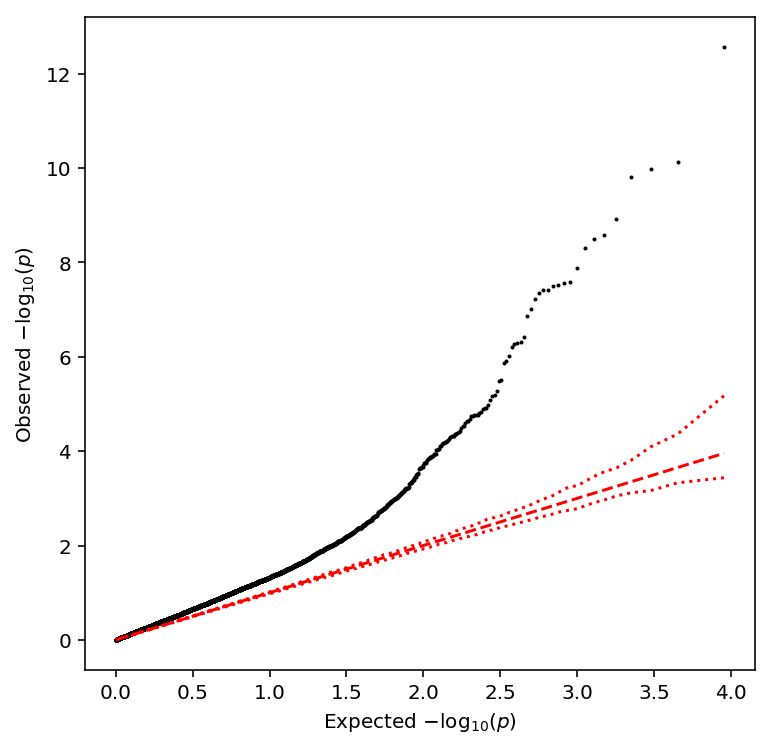
Take QTLs at FDR 10%.
sample_mean_qtls['fdr_pass'].sum()
176
Call variance-QTLs
Throw out individuals with fewer than 50 cells.
Read the UMI matrix.
Compute the sample variance of log CPM per individual, then normalize.
sample_var = (cpm(umi) .groupby(annotation['chip_id'].values, axis=1) .agg(np.var) .loc[:,keep_inds] .transform(lambda x: (x - x.mean()) / x.std(), axis=1) .apply(qqnorm, axis=0))
Compute principal components and write out the covariate file.
covars = pd.DataFrame(skd.PCA(n_components=2).fit(sample_var).components_, columns=sample_var.columns) covars.index.name = 'id' covars.to_csv('/scratch/midway2/aksarkar/singlecell/scqtl-mapping/sample-var-covars.txt', sep='\t')
Write out the phenotype file for qtltools. Hold out even chromosomes while
optimizing the power to detect eQTLs.
write_pheno_file(sample_var, gene_info, '/scratch/midway2/aksarkar/singlecell/scqtl-mapping/sample-var.bed', holdout=False)
Index the phenotype file.
Submitted batch job 45128698
Run qtltools.
Submitted batch job 45128699
Read the output.
sample_var_qtls = read_qtltools_output('scqtl-mapping/sample-var')
Check the beta approximation to the permutation p-values.
plot_approx_permutation(sample_var_qtls)
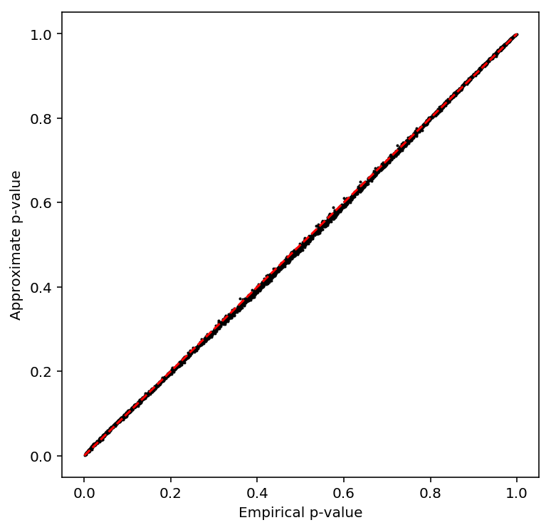
Plot a QQ plot of the adjusted p-values.
qqplot(sample_var_qtls)
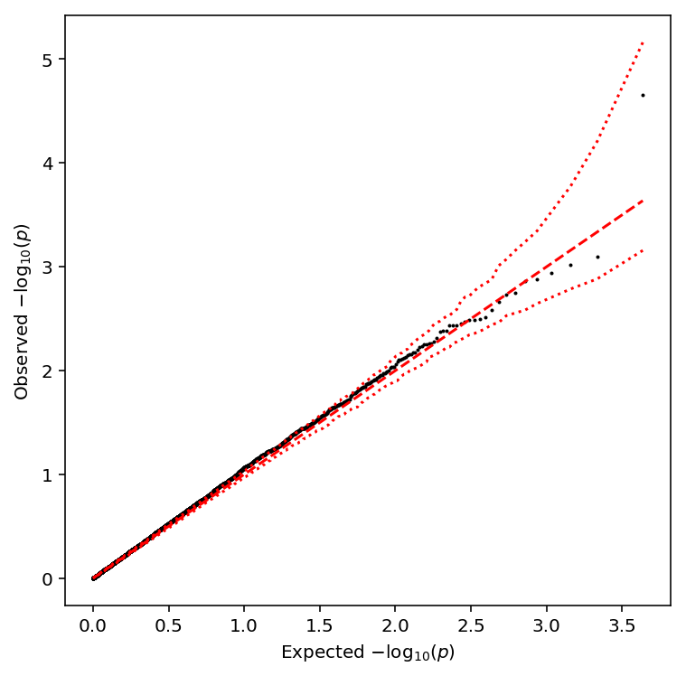
Take QTLs at FDR 10%.
sample_var_qtls['fdr_pass'].sum()
3
Call CV-QTLs
Throw out individuals with fewer than 50 cells.
Read the UMI matrix.
Compute the sample CV of log CPM per individual, then normalize.
sample_cv = (cpm(umi) .groupby(annotation['chip_id'].values, axis=1) .agg(lambda x: np.std(x, axis=1) / (np.mean(x, axis=1) + 1e-8)) .loc[:,keep_inds] .transform(lambda x: (x - x.mean()) / x.std(), axis=1) .apply(qqnorm, axis=0))
Normalize the CV matrix.
sample_cv = sample_cv.loc[:,keep_inds].transform(lambda x: (x - x.mean()) / x.std(), axis=1).apply(qqnorm, axis=0)
Write out the phenotype file for qtltools. Hold out even chromosomes while
optimizing the power to detect eQTLs.
write_pheno_file(sample_cv, gene_info, '/scratch/midway2/aksarkar/singlecell/scqtl-mapping/sample-cv.bed', holdout=True)
Index the phenotype file.
Submitted batch job 45128842
Run qtltools.
Submitted batch job 45128843
Read the output.
sample_cv_qtls = read_qtltools_output('scqtl-mapping/sample-cv')
Check the beta approximation to the permutation p-values.
plot_approx_permutation(sample_cv_qtls)
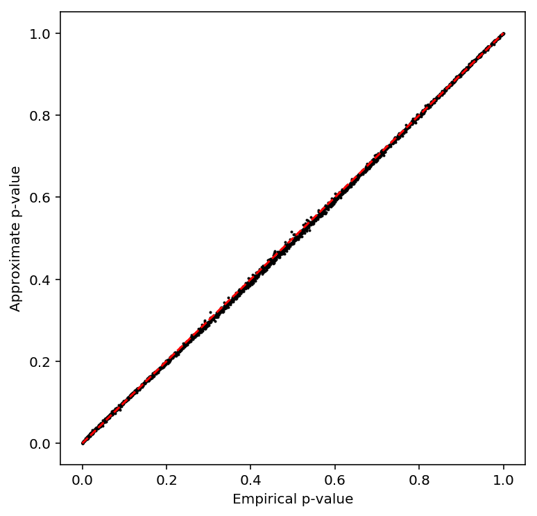
Plot a QQ plot of the adjusted p-values.
qqplot(sample_cv_qtls)
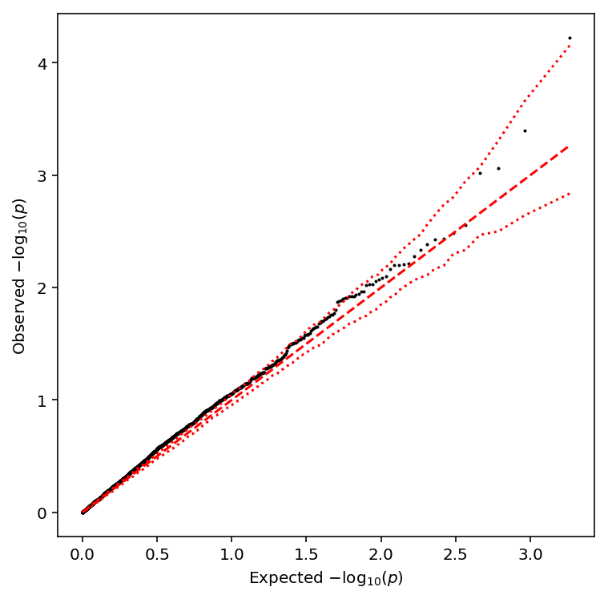
Take QTLs at FDR 10%.
sample_cv_qtls['fdr_pass'].sum()
0
Call Fano-QTLs
Throw out individuals with fewer than 50 cells.
Read the UMI matrix.
Fisher's index of dispersion is defined as \(V[x] / E[x]\). The Fano factor is Fisher's index of dispersion over a fixed window (in our case, the total number of reads).
Compute the sample Fano factor of log CPM per individual, then normalize.
sample_fano = (cpm(umi) .groupby(annotation['chip_id'].values, axis=1) .agg(lambda x: np.var(x, axis=1) / (np.mean(x, axis=1))) .loc[:,keep_inds] .transform(lambda x: (x - x.mean()) / x.std(), axis=1) .apply(qqnorm, axis=0))
Write out the phenotype file for qtltools. Hold out even chromosomes while
optimizing the power to detect eQTLs.
write_pheno_file(sample_fano, gene_info, '/scratch/midway2/aksarkar/singlecell/scqtl-mapping/sample_fano.bed', holdout=False)
Index the phenotype file.
Submitted batch job 45129160
Compute principal components and write out the covariate file.
covars = pd.DataFrame(skd.PCA(n_components=2).fit(sample_fano).components_, columns=sample_fano.columns) covars.index.name = 'id' covars.to_csv('/scratch/midway2/aksarkar/singlecell/scqtl-mapping/sample-fano-covars.txt', sep='\t')
Run qtltools.
Submitted batch job 45129161
Read the output.
sample_fano_qtls = read_qtltools_output('scqtl-mapping/sample_fano')
Check the beta approximation to the permutation p-values.
plot_approx_permutation(sample_fano_qtls)
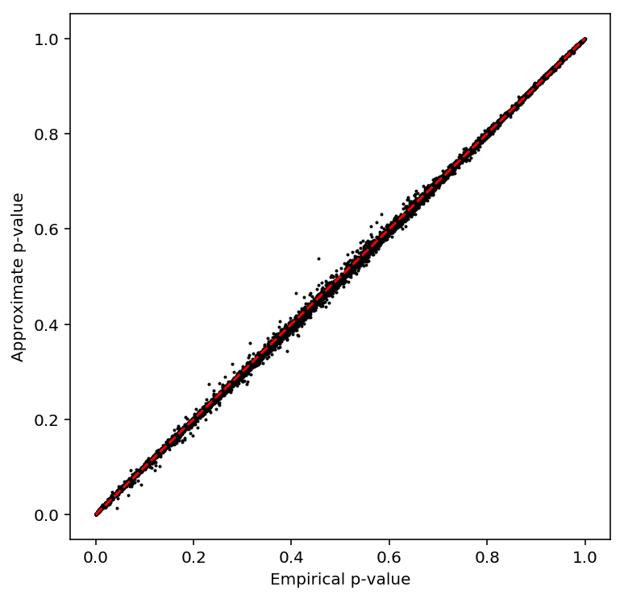
Plot a QQ plot of the adjusted p-values.
qqplot(sample_fano_qtls)
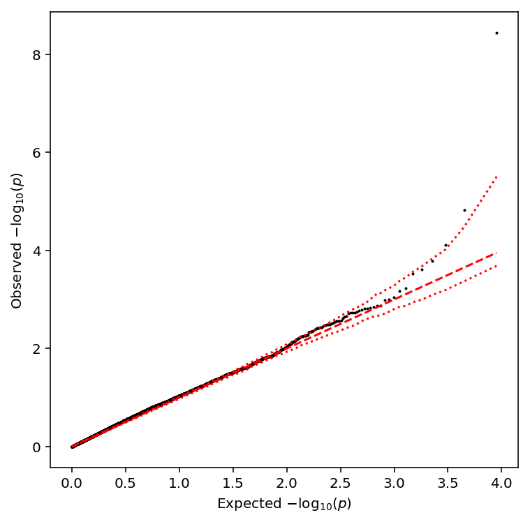
Take QTLs at FDR 10%.
sample_fano_qtls['fdr_pass'].sum()
2
Analysis using ZINB
Call μ-QTLs
Throw out individuals with fewer than 50 cells.
Read the estimated parameters \(\log \mu_{ik}\). Exclude individuals with fewer than 50 cells.
with sqlite3.connect('/project2/mstephens/aksarkar/projects/singlecell-qtl/browser/browser.db') as conn: log_mu = (pd.read_sql( """select gene, ind, log_mu from params where ind in (select chip_id from annotation group by chip_id having count(distinct sample) >= 50);""", conn) .pivot(index='gene', columns='ind', values='log_mu'))
Normalize the mean matrix analagous to the bulk data. In our estimation procedure, we now return \(\ln\mu = -\infty\) for individuals with only zero observations. Clip this to \(\ln\epsilon\), where \(\epsilon\) is the smallest representable floating point number.
log_mu = np.clip(log_mu.loc[keep_genes.values.ravel()].dropna(), np.log(np.finfo(np.float).eps), 0).transform(lambda x: (x - x.mean()) / x.std(), axis=1).apply(qqnorm, axis=0)
Compute principal components of the mean matrix.
covars = pd.DataFrame(skd.PCA(n_components=10).fit(log_mu).components_, columns=log_mu.columns) covars.index.name = 'id' covars.to_csv('/scratch/midway2/aksarkar/singlecell/scqtl-mapping/log_mu-covars.txt', sep='\t')
Write out the phenotype file for qtltools. Hold out even chromosomes while
optimizing the power to detect eQTLs.
write_pheno_file(log_mu, gene_info, '/scratch/midway2/aksarkar/singlecell/scqtl-mapping/log_mu.bed', holdout=False)
Index the phenotype file.
Submitted batch job 45074749
Run qtltools.
Submitted batch job 45074760
Read the output.
log_mu_qtls = read_qtltools_output('scqtl-mapping/log_mu')
Check the beta approximation to the permutation p-values.
plot_approx_permutation(log_mu_qtls)
Plot a QQ plot of the adjusted p-values.
qqplot(log_mu_qtls)
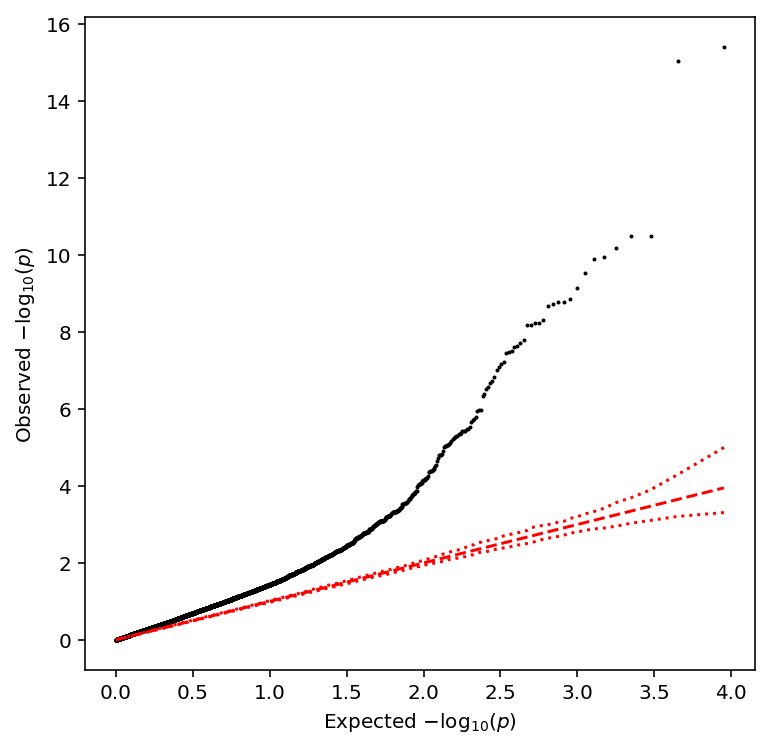
Take QTLs at FDR 10%.
log_mu_qtls['fdr_pass'].sum()
211
Call φ-QTLs
Read the estimated parameters. Exclude individuals with fewer than 50 cells.
with sqlite3.connect('/project2/mstephens/aksarkar/projects/singlecell-qtl/browser/browser.db') as conn: log_phi = (pd.read_sql( """select gene, ind, log_phi from params where ind in (select chip_id from annotation group by chip_id having count(distinct sample) >= 50);""", conn) .pivot(index='gene', columns='ind', values='log_phi'))
Normalize the dispersion matrix. Again, we have infinite values, but dispersions are not restricted to be in \([0, 1]\), so we have to change the clipping bounds.
log_phi = np.clip(log_phi.loc[keep_genes.values.ravel()].dropna(), -300, 300).transform(lambda x: (x - x.mean()) / x.std(), axis=1).apply(qqnorm, axis=1)
Write out the phenotype file.
write_pheno_file(log_phi, gene_info, holdout=False, output_file='/scratch/midway2/aksarkar/singlecell/scqtl-mapping/log_phi.bed')
Index the phenotype file.
Submitted batch job 45075315
Run qtltools.
Submitted batch job 45075319
Read the output.
log_phi_qtls = read_qtltools_output('scqtl-mapping/log_phi')
Check the beta approximation to the permutation p-values.
plot_approx_permutation(log_phi_qtls)
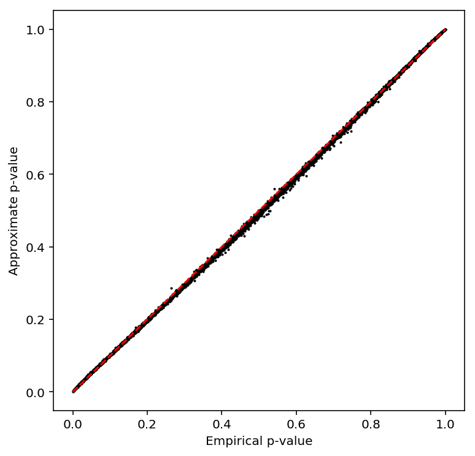
Plot a QQ plot of the adjusted p-values.
qqplot(log_phi_qtls)
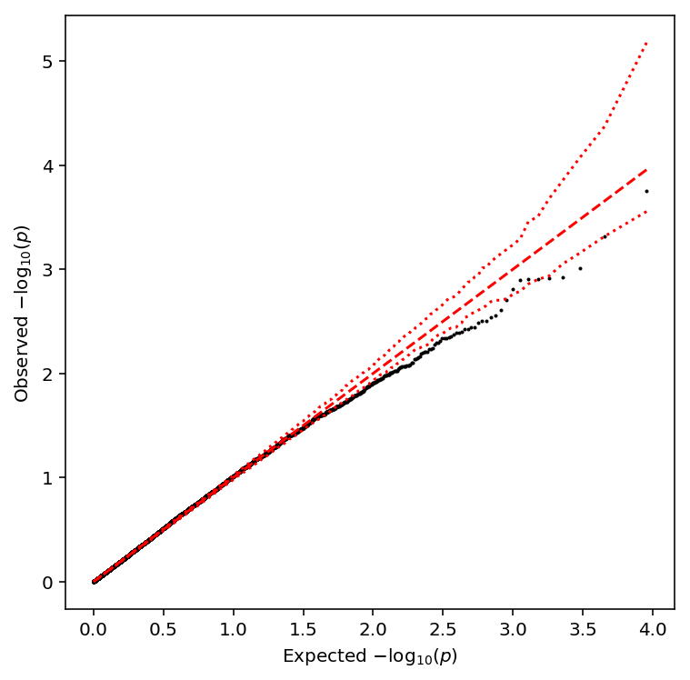
Take QTLs at FDR 10%.
log_phi_qtls['fdr_pass'].sum()
0
Call π-QTLs
For each gene \(k\), fit a linear model:
\[ \mathrm{logit}(\pi_k) = X\beta + \epsilon \]
Read the estimated parameters. Exclude individuals with fewer than 50 cells.
with sqlite3.connect('/project2/mstephens/aksarkar/projects/singlecell-qtl/browser/browser.db') as conn: logodds = (pd.read_sql( """select gene, ind, logodds from params where ind in (select chip_id from annotation group by chip_id having count(distinct sample) >= 50);""", conn) .pivot(index='gene', columns='ind', values='logodds'))
Normalize the log odds matrix.
logodds = np.clip(logodds.loc[keep_genes.values.ravel()].dropna(), -300, 300) logodds = logodds.loc[(logodds.agg(np.std, axis=1) > 0).values] logodds = logodds.transform(lambda x: (x - x.mean()) / x.std(), axis=1).apply(qqnorm, axis=1)
Write out the phenotype file.
write_pheno_file(logodds, gene_info, holdout=False, output_file='/scratch/midway2/aksarkar/singlecell/scqtl-mapping/logodds.bed')
Index the phenotype file.
Submitted batch job 45075744
Run qtltools.
Submitted batch job 45075760
Read the output.
logodds_qtls = read_qtltools_output('scqtl-mapping/logodds')
Check the beta approximation to the permutation p-values.
plot_approx_permutation(logodds_qtls)
Plot a QQ plot of the adjusted p-values.
qqplot(logodds_qtls)
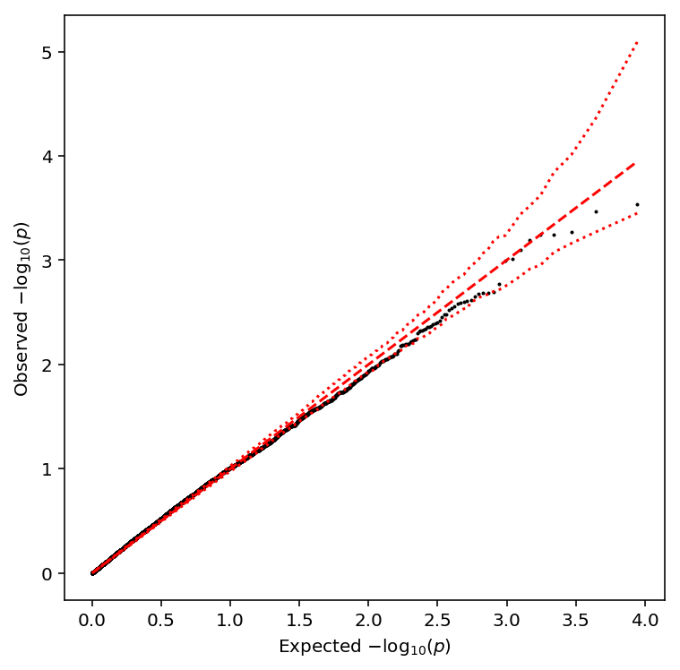
Take QTLs at FDR 10%.
logodds_qtls['fdr_pass'].sum()
0
Call mean-QTLs
We have \(r_{ijk} \sim g_{ijk}(\cdot)\), where \(g\) is the ZINB density as previously defined.
Fixing individual \(i\), gene \(k\), we can estimate a zero-inflation–corrected mean as:
\[ E[r_{ijk}] = R_{ijk} \mu_{ik} \]
Read the estimated corrected means.
with sqlite3.connect('/project2/mstephens/aksarkar/projects/singlecell-qtl/browser/browser.db') as conn: mean = (pd.read_sql( """select gene, ind, mean from params where ind in (select chip_id from annotation group by chip_id having count(distinct sample) >= 50);""", conn) .pivot(index='gene', columns='ind', values='mean'))
Normalize the mean matrix.
mean = mean.loc[keep_genes.values.ravel()].transform(lambda x: (x - x.mean()) / x.std(), axis=1).apply(qqnorm, axis=0)
Compute principal components of the mean matrix.
covars = pd.DataFrame(skd.PCA(n_components=10).fit(mean).components_, columns=mean.columns) covars.index.name = 'id' covars.to_csv('/scratch/midway2/aksarkar/singlecell/scqtl-mapping/mean-covars.txt', sep='\t')
Write out the phenotype file for qtltools. Hold out even chromosomes while
optimizing the power to detect eQTLs.
write_pheno_file(mean, gene_info, '/scratch/midway2/aksarkar/singlecell/scqtl-mapping/mean.bed', holdout=False)
Index the phenotype file.
Submitted batch job 45076054
Run qtltools.
Submitted batch job 45076062
Read the output.
mean_qtls = read_qtltools_output('scqtl-mapping/mean')
Check the beta approximation to the permutation p-values.
plot_approx_permutation(mean_qtls)

Plot a QQ plot of the adjusted p-values.
qqplot(mean_qtls)

Take QTLs at FDR 10%.
mean_qtls['fdr_pass'].sum()
199
Call variance-QTLs
We have \(r_{ijk} \sim g_{ijk}(\cdot)\), where \(g\) is the ZINB density as previously defined.
Fixing individual \(i\), gene \(k\), we can estimate a zero-inflation–corrected variance as:
\[ E[r_{ijk}] = R_{ijk} \mu_{ik} \]
\[ V[r_{ijk}] = E[r_{ijk}] + \left(E[r_{ijk}]\right)^2 \phi_{ik} \]
Read the estimated corrected variances.
with sqlite3.connect('/project2/mstephens/aksarkar/projects/singlecell-qtl/browser/browser.db') as conn: variance = (pd.read_sql( """select gene, ind, var from params where ind in (select chip_id from annotation group by chip_id having count(distinct sample) >= 50);""", conn) .pivot(index='gene', columns='ind', values='var'))
Normalize the variance matrix.
variance = variance.loc[keep_genes.values.ravel()].transform(lambda x: (x - x.mean()) / x.std(), axis=1).apply(qqnorm, axis=0)
Compute principal components of the variance matrix.
covars = pd.DataFrame(skd.PCA(n_components=2).fit(variance).components_, columns=variance.columns) covars.index.name = 'id' covars.to_csv('/scratch/midway2/aksarkar/singlecell/scqtl-mapping/variance-covars.txt', sep='\t')
Write out the phenotype file for qtltools.
write_pheno_file(variance, gene_info, '/scratch/midway2/aksarkar/singlecell/scqtl-mapping/variance.bed', holdout=False)
Index the phenotype file.
Submitted batch job 45224226
Run qtltools.
Submitted batch job 45224227
Read the output.
variance_qtls = read_qtltools_output('scqtl-mapping/variance')
Check the beta approximation to the permutation p-values.
plot_approx_permutation(variance_qtls)
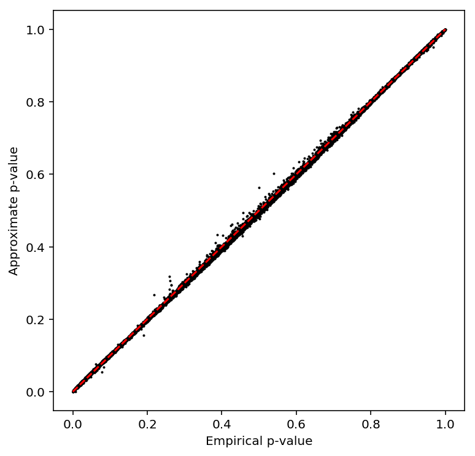
Plot a QQ plot of the adjusted p-values.
qqplot(variance_qtls)
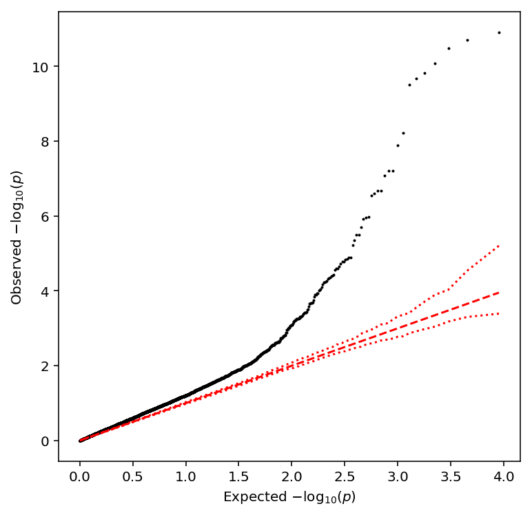
Take QTLs at FDR 10%.
variance_qtls['fdr_pass'].sum()
100
Call CV-QTLs
Estimate the coefficient of variation using the corrected moments.
with sqlite3.connect('/project2/mstephens/aksarkar/projects/singlecell-qtl/browser/browser.db') as conn: params = (pd.read_sql( """select gene, ind, mean, var from params where ind in (select chip_id from annotation group by chip_id having count(distinct sample) >= 50);""", conn)) params['cv'] = np.sqrt(params['var']) / (params['mean'] + 1e-8) cv = params.pivot(index='gene', columns='ind', values='cv')
Normalize the CV matrix.
cv = cv.loc[keep_genes.values.ravel()].transform(lambda x: (x - x.mean()) / x.std(), axis=1).apply(qqnorm, axis=0)
Write out the phenotype file for qtltools. Hold out even chromosomes while
optimizing the power to detect eQTLs.
write_pheno_file(cv, gene_info, '/scratch/midway2/aksarkar/singlecell/scqtl-mapping/cv.bed', holdout=False)
Index the phenotype file.
Submitted batch job 45076903
Run qtltools.
Submitted batch job 45076906
Read the output.
cv_qtls = read_qtltools_output('scqtl-mapping/cv')
Check the beta approximation to the permutation p-values.
plot_approx_permutation(cv_qtls)
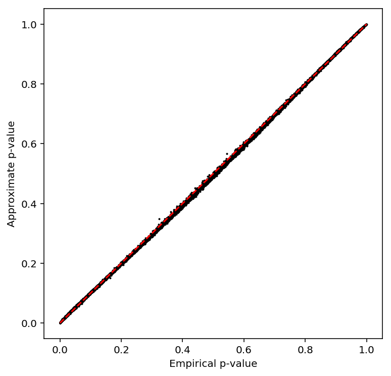
Plot a QQ plot of the adjusted p-values.
qqplot(cv_qtls)
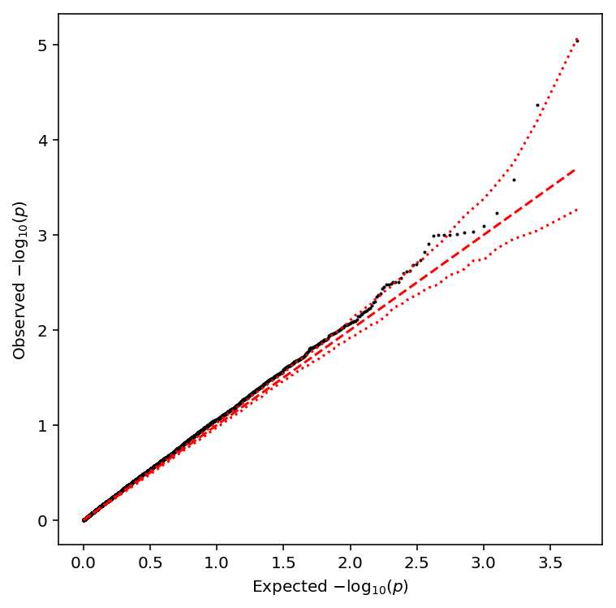
Take QTLs at FDR 10%.
cv_qtls['fdr_pass'].sum()
4
Call Fano-QTLs
Estimate the coefficient of variation using the corrected moments.
with sqlite3.connect('/project2/mstephens/aksarkar/projects/singlecell-qtl/browser/browser.db') as conn: params = (pd.read_sql( """select gene, ind, mean, var from params where ind in (select chip_id from annotation group by chip_id having count(distinct sample) >= 50);""", conn)) params['fano'] = params['var'] / (params['mean'] + 1e-8) fano = params.pivot(index='gene', columns='ind', values='fano')
Normalize the Fano matrix.
fano = fano.loc[keep_genes.values.ravel()].transform(lambda x: (x - x.mean()) / x.std(), axis=1).apply(qqnorm, axis=0)
Write out the phenotype file for qtltools. Hold out even chromosomes while
optimizing the power to detect eQTLs.
write_pheno_file(fano, gene_info, '/scratch/midway2/aksarkar/singlecell/scqtl-mapping/fano.bed', holdout=False)
Index the phenotype file.
Submitted batch job 45077183
Run qtltools.
Submitted batch job 45077190
Read the output.
fano_qtls = read_qtltools_output('scqtl-mapping/fano')
Check the beta approximation to the permutation p-values.
plot_approx_permutation(fano_qtls)
Plot a QQ plot of the adjusted p-values.
qqplot(fano_qtls)
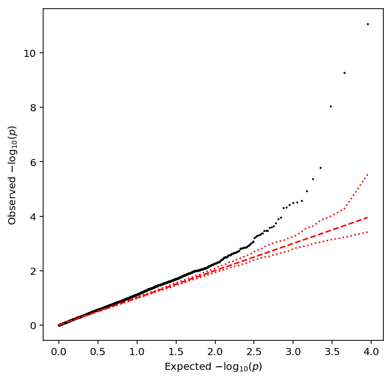
Take QTLs at FDR 10%.
fano_qtls['fdr_pass'].sum()
9
Write out the QTLs
sbatch --partition=broadwl #!/bin/bash cat >.rsync-filter <<EOF + */ + *.bed.gz + *.txt.gz + *covars* - * EOF function z { test $1-qtl.1.txt -nt $1.txt.gz && cat $1-qtl.*.txt | awk 'BEGIN {print "gene", "chr", "start", "end", "strand", "num_vars", "distance", "id", "var_chr", "var_start", "var_end", "df", "dummy", "a", "b", "p_nominal", "beta", "p_empirical", "p_beta"} {print}' | gzip >$1.txt.gz; } export -f z parallel -j1 z ::: cv fano log-mean logodds mean phi pooled variance rsync -FFau . /project2/mstephens/aksarkar/projects/singlecell-qtl/data/scqtl-mapping/
Submitted batch job 45224360
QTL overlap
Replication rates
Read the QTLs and normalized expression matrices.
prefix = '/project2/mstephens/aksarkar/projects/singlecell-qtl/data/scqtl-mapping/' qtls = {pheno: (pd.read_table('{}/{}.txt.gz'.format(prefix, pheno), sep=' '), pd.read_table('{}/{}.bed.gz'.format(prefix, pheno)).set_index('pid').filter(like='NA', axis='columns')) for pheno in ['pooled', 'log_mu', 'log_phi', 'mean', 'variance', 'fano']}
The bulk QTLs are in fastqtl format and need some munging.
bulk_qtls = pd.read_table('{}/bulk.txt.gz'.format(prefix)) bulk_qtls['var_start'] = bulk_qtls['pos'] # Important: this collides with the field we're going to add in # replication_tests del bulk_qtls['p'] bulk_expr = pd.read_table('{}/bulk.bed.gz'.format(prefix)).set_index('pid').filter(like='NA', axis='columns') bulk_expr.index = [x.split('.')[0] for x in bulk_expr.index] qtls['bulk'] = (bulk_qtls, bulk_expr)
Compute the gene-level FDR filter.
for k in qtls: qtls[k][0]['fdr_pass'] = bh(qtls[k][0]['p_beta']) < 0.1
Estimate replication rates for mean QTLs.
pd.options.display.float_format = '{:.3g}'.format pairwise_replication(qtls, phenos=['bulk', 'pooled', 'log_mu', 'mean'], ticks=['Bulk', 'Pooled', '$\log(\mu)$', 'ZI mean'])
Bulk Pooled $\log(\mu)$ ZI mean Bulk 100 80.1 77.2 77.1 Pooled 82 100 100 99.6 $\log(\mu)$ 80.6 99.5 100 100 ZI mean 80.1 99.5 100 100
Estimate the rate at which variance QTLs replicate as mean QTLs (and vice versa).
pairwise_replication(qtls,
phenos=['bulk', 'pooled', 'log_mu', 'mean', 'log_phi', 'variance', 'fano'],
ticks=['Bulk', 'Pooled', '$\log(\mu)$', 'ZI mean', '$\log(\phi)$', 'ZI variance', 'ZI Fano'])
$\log(\mu)$ ZI mean $\log(\phi)$ ZI variance ZI Fano $\log(\mu)$ 100 100 43.3 99.5 83.3 ZI mean 100 100 41.9 100 81.8 $\log(\phi)$ 100 100 100 100 100 ZI variance 100 100 84.1 100 100 ZI Fano 100 100 100 100 100
Relationship of \(p\)-values, effect sizes, and expression levels
Compute relative abundance per individual.
with sqlite3.connect('/project2/mstephens/aksarkar/projects/singlecell-qtl/browser/browser.db') as conn: abundance = (pd.read_sql( """select gene, ind, log_mu from params where ind in (select chip_id from annotation group by chip_id having count(distinct sample) >= 50);""", conn) .pivot(index='gene', columns='ind', values='log_mu')) abundance -= abundance.agg(sp.logsumexp) abundance /= np.log(2)
Investigate whether variance QTL \(p\)-values are correlated with relative abundance.
variance_qtls = qtls['variance'][0] thresh_pass = variance_qtls['p_beta'] < 1e-2 var_qtl_abundance, var_qtl_stats = abundance.align(variance_qtls[thresh_pass].set_index('gene'), axis='index', join='inner') fdr_pass = var_qtl_stats['fdr_pass']
Count how many variance QTLs have \(p < 10^{-2}\)
thresh_pass.sum()
248
plt.clf() plt.errorbar(x=var_qtl_abundance.mean(axis=1), y=-np.log10(var_qtl_stats['p_beta']), xerr=var_qtl_abundance.std(axis=1), fmt='none', label=None, lw=1, ecolor='.8', zorder=-1) plt.scatter(x=var_qtl_abundance[fdr_pass].mean(axis=1), y=-np.log10(var_qtl_stats[fdr_pass]['p_beta']), c='r', s=4, label='FDR 10%') plt.scatter(x=var_qtl_abundance[~fdr_pass].mean(axis=1), y=-np.log10(var_qtl_stats[~fdr_pass]['p_beta']), c='k', s=4, label='p < 0.01') plt.legend(loc='upper left', frameon=False) plt.xlabel('$\log_2(\mathrm{relative\ abundance})$') _ = plt.ylabel('Variance QTL $-\log_{10}(p)$')

Make sure our effect sizes match qtltools.
variance = qtls['variance'][1] Xv, Yv = extract_qtl_gene_pair(variance_qtls[thresh_pass], variance, dosages='/scratch/midway2/aksarkar/singlecell/reproduce-yang/YRI_SNPs_2_IPSC.txt.gen.gz') Cv = pd.read_table('/project2/mstephens/aksarkar/projects/singlecell-qtl/data/scqtl-mapping/variance-covars.txt', index_col=0) Cv = Cv.align(Xv, axis='columns', join='inner')[0] my_var_qtl_stats = replication_tests(Xv, Yv, Cv) my_var_qtl_stats.merge(variance_qtls, on='gene').apply(lambda x: abs(x['beta_x'] - x['beta_y']), axis=1).describe()
count 248.000000 mean 0.097948 std 0.471870 min 0.000321 25% 0.022069 50% 0.054700 75% 0.089498 max 7.432064 dtype: float64
Look at the gene with max difference in estimated effect size.
my_var_qtl_stats.iloc[my_var_qtl_stats.merge(variance_qtls, on='gene').apply(lambda x: abs(x['beta_x'] - x['beta_y']), axis=1).idxmax()]
beta -103.961 gene ENSG00000137285 p 0.78185 se 375.433 Name: 200, dtype: object
variance_qtls.query('gene == "ENSG00000137285"')['beta']
953 -111.393 Name: beta, dtype: float64
Estimate standard errors via the bootstrap.
var_qtl_stats['bootstrap_se'] = bootstrap_se(Xv, Yv, Cv) var_qtl_stats['se'] = my_var_qtl_stats.set_index('gene')['se']
Investigate whether analytic SEs are reasonable:
var_qtl_stats['se'].describe()
count 248.000000 mean 1.561811 std 23.836989 min 0.009998 25% 0.025567 50% 0.035241 75% 0.055008 max 375.432921 Name: se, dtype: float64
var_qtl_stats['bootstrap_se'].describe()
count 247.000000 mean 0.267170 std 0.888356 min 0.094744 25% 0.158373 50% 0.187001 75% 0.238489 max 14.088750 Name: bootstrap_se, dtype: float64
Throw out the gene with abnormally large SE.
var_qtl_stats.loc[var_qtl_stats['se'].idxmax()]
chr chr6 start 3231965 end 3231964 strand - num_vars 960 distance -88595 id rs4959814.chr6.3320559 var_chr chr6 var_start 3.32056e+06 var_end 3.32056e+06 df 49 dummy 33.4195 a 0.888297 b 58.8358 p_nominal 9.04449e-07 beta -111.393 p_empirical 0.00259974 p_beta 0.006076 fdr_pass False bootstrap_se 24.2859 se 375.433 Name: ENSG00000137285, dtype: object
var_qtl_stats.loc[var_qtl_stats['bootstrap_se'].idxmax()]
chr chr17 start 2415186 end 2415185 strand - num_vars 578 distance -20240 id rs7215976.chr17.2435425 var_chr chr17 var_start 2.43542e+06 var_end 2.43542e+06 df 49 dummy 32.9984 a 0.947312 b 39.0474 p_nominal 5.20528e-06 beta -3.07316 p_empirical 0.00909909 p_beta 0.00983825 fdr_pass False bootstrap_se 14.0888 se 0.356516 z -0.218129 mean_beta -2.50384 mean_z -0.378847 Name: ENSG00000127804, dtype: object
var_qtl_stats = var_qtl_stats.dropna().drop('ENSG00000137285') fdr_pass = var_qtl_stats['fdr_pass']
plt.clf() plt.gcf().set_size_inches(4, 4) plt.scatter(var_qtl_stats['se'], var_qtl_stats['bootstrap_se'], s=1, c='k') plt.plot([0, 2], [0, 2], c='r', ls=':', lw=1) plt.xlim([0, 2]) plt.ylim([0, 2]) plt.xlabel('Analytic SE') _ = plt.ylabel('Bootstrap SE')

Compute \(z\)-scores using the bootstrap SEs.
var_qtl_stats['z'] = var_qtl_stats['beta'] / var_qtl_stats['bootstrap_se']
Investigate whether \(z\)-scores based on bootstrap SEs agree with permutation \(p\)-values.
plt.clf() plt.scatter(-np.log10(var_qtl_stats[fdr_pass]['p_beta']), var_qtl_stats[fdr_pass]['z'], c='r', label='FDR 10%', s=4) plt.scatter(-np.log10(var_qtl_stats[~fdr_pass]['p_beta']), var_qtl_stats[~fdr_pass]['z'], c='k', label='p < 0.01', s=4) plt.xlabel('Variance QTL $-\log_{10}(p)$') plt.ylabel('Variance QTL $z$-score')
Text(0,0.5,'Variance QTL $z$-score')

Investigate whether variance QTL \(z\)-scores are correlated with relative abundance.
var_qtl_abundance = var_qtl_abundance.align(var_qtl_stats, axis='index', join='inner')[0]
plt.clf() plt.errorbar(x=var_qtl_abundance.mean(axis=1), y=var_qtl_stats['z'], xerr=var_qtl_abundance.std(axis=1), fmt='none', label=None, lw=1, ecolor='.8', zorder=1) plt.scatter(x=var_qtl_abundance[fdr_pass].mean(axis=1), y=var_qtl_stats[fdr_pass]['z'], c='r', s=2, label='FDR 10%', zorder=2) plt.scatter(x=var_qtl_abundance[~fdr_pass].mean(axis=1), y=var_qtl_stats[~fdr_pass]['z'], c='k', s=2, label='p < 0.01', zorder=2) plt.legend(frameon=False) plt.axhline(y=0, c='k') plt.xlabel('$\log_2(\mathrm{relative\ abundance})$') _ = plt.ylabel('Variance QTL $z$-score')

Investigate whether variance QTL \(z\)-scores are correlated with pooled QTL \(z\)-scores.
Xm, Ym = extract_qtl_gene_pair(variance_qtls[thresh_pass], qtls['pooled'][1], dosages='/scratch/midway2/aksarkar/singlecell/reproduce-yang/YRI_SNPs_2_IPSC.txt.gen.gz') Cm = pd.read_table('/project2/mstephens/aksarkar/projects/singlecell-qtl/data/scqtl-mapping/pooled-covars.txt') Cm = Cm.align(Xm, axis='columns', join='inner')[0] var_qtl_stats['mean_beta'] = replication_tests(Xm, Ym, Cm).set_index('gene')['beta'] var_qtl_stats['mean_z'] = var_qtl_stats['mean_beta'] / bootstrap_se(Xm, Ym, Cm)
lim = [-12, 12] plt.clf() plt.gcf().set_size_inches(6, 6) plt.plot(lim, lim, c='r', ls=':', lw=1) plt.scatter(var_qtl_stats[fdr_pass]['z'], var_qtl_stats[fdr_pass]['mean_z'], c='r', s=3, label='FDR 10%') plt.scatter(var_qtl_stats[~fdr_pass]['z'], var_qtl_stats[~fdr_pass]['mean_z'], c='k', s=3, label='Permuted p < 0.01') plt.legend() plt.axhline(y=0, c='k', lw=1) plt.axvline(x=0, c='k', lw=1) plt.xlim(lim) plt.ylim(lim) plt.xlabel('Variance QTL $z$-score') _ = plt.ylabel('Pooled QTL $z$-score')

Predicting mean QTLs from variance QTLs
As we change the threshold for calling variance QTLs, track the precision and recall of mean QTLs (at the gene level).
Y, P = qtls['pooled'][0]['fdr_pass'].align(qtls['variance'][0]['p_beta'].dropna(), join='inner') p, r, _ = sklearn.metrics.precision_recall_curve(Y.astype(int), -np.log(P)) plt.clf() plt.gcf().set_size_inches(4, 4) plt.plot(r[::10], p[::10], lw=1, c='k') plt.xlabel('Recall of mean QTLs') _ = plt.ylabel('Precision of mean QTLs')

Track sensitivity and specificity of mean QTLs.
fpr, tpr, _ = sklearn.metrics.roc_curve(Y.astype(int), -np.log(P)) plt.clf() plt.gcf().set_size_inches(4, 4) plt.plot(fpr[::10], tpr[::10], lw=1, c='k') plt.xlabel('False positive rate of mean QTLs') _ = plt.ylabel('True positive rate of mean QTLs')

As we change the threshold for calling pooled QTLs, track the precision and recall of variance QTLs (at the gene level).
Y, P = qtls['variance'][0]['fdr_pass'].align(qtls['pooled'][0]['p_beta'].dropna(), join='inner') p, r, _ = sklearn.metrics.precision_recall_curve(Y.astype(int), -np.log(P)) plt.clf() plt.gcf().set_size_inches(4, 4) plt.plot(r[::10], p[::10], lw=1, c='k') plt.xlabel('Recall of variance QTLs') _ = plt.ylabel('Precision of variance QTLs')

Track sensitivity and specificity of variance QTLs.
fpr, tpr, _ = sklearn.metrics.roc_curve(Y.astype(int), -np.log(P)) plt.clf() plt.gcf().set_size_inches(4, 4) plt.plot(fpr[::10], tpr[::10], lw=1, c='k') plt.xlabel('False positive rate of variance QTLs') _ = plt.ylabel('True positive rate of variance QTLs')
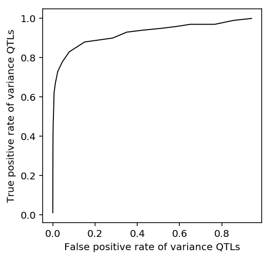
Multivariate adaptive shrinkage
Write out a subset of the phenotype matrix to get SNP-level summary stats for
mash.
write_pheno_file(qtls['variance'][1].filter(items=qtls['variance'][0][qtls['variance'][0][thresh_pass]]['gene'], axis='index'), gene_info, '/scratch/midway2/aksarkar/singlecell/scqtl-mapping/variance-fdr-pass.bed', holdout=False)
Index the phenotype file.
Submitted batch job 45224858
Run the nominal pass.
sbatch --partition=broadwl --mem=8G --wait #!/bin/bash source activate scqtl qtltools cis --vcf /scratch/midway2/aksarkar/singlecell/reproduce-yang/yri-dosages.vcf.gz --bed variance-fdr-pass.bed.gz --cov variance-covars.txt --window 100000 --nominal 1 --out variance-fdr-pass-nominal.txt
Submitted batch job 45224965
Compute \(\hat\beta\) and bootstrap SE ourselves to check whether we can simply inverse CDF transform from the nominal \(p\)-values.
test_var_qtl_stats = estimate_beta_se(Yv.head(n=1), '/scratch/midway2/aksarkar/singlecell/reproduce-yang/yri-dosages.vcf.gz', gene_info, Cv) test_var_qtl_stats['z'] = test_var_qtl_stats['beta'] / test_var_qtl_stats['se']
Read the results.
nominal_var_qtl_stats = read_nominal_pass('/scratch/midway2/aksarkar/singlecell/scqtl-mapping/variance-fdr-pass-nominal.txt')
Check our \(z\)-scores against inverse CDF-derived \(z\)-scores.
M = test_var_qtl_stats.merge(nominal_var_qtl_stats, left_on=['gene', 'snp'], right_on=['gene', 'id'])
plt.clf() plt.gcf().set_size_inches(4, 4) lim = [-6, 6] plt.scatter(M['z_x'], M['z_y'], c='k', s=3) plt.axhline(y=0, c='k', lw=1) plt.axvline(x=0, c='k', lw=1) plt.plot(lim, lim, c='r', ls=':', lw=1) plt.xlim(lim) plt.ylim(lim) plt.xlabel('Bootstrap $z$ scores') _ = plt.ylabel('Inverse CDF $z$ scores')

Subset the pooled expression matrix at the variance QTL genes.
write_pheno_file(qtls['pooled'][1].filter(items=qtls['variance'][0][qtls['variance'][0]['fdr_pass']]['gene'], axis='index'), gene_info, '/scratch/midway2/aksarkar/singlecell/scqtl-mapping/pooled-fdr-pass.bed', holdout=False)
Index the phenotype file.
Submitted batch job 45224966
Run the nominal pass.
sbatch --partition=broadwl --mem=4G --wait #!/bin/bash source activate scqtl qtltools cis --vcf /scratch/midway2/aksarkar/singlecell/reproduce-yang/yri-dosages.vcf.gz --bed pooled-fdr-pass.bed.gz --cov pooled-covars.txt --window 100000 --nominal 1 --out pooled-fdr-pass-nominal.txt
Submitted batch job 45224967
Read the results
nominal_pooled_qtl_stats = read_nominal_pass('/scratch/midway2/aksarkar/singlecell/scqtl-mapping/pooled-fdr-pass-nominal.txt')
Run two-condition mash.
Z = nominal_var_qtl_stats.merge(nominal_pooled_qtl_stats, on=['gene', 'id'])[['gene', 'z_x', 'z_y']].set_index('gene') mash_result = {} for k, g in Z.groupby(level=0): data = mashr.mash_set_data(numpy2ri(g.values), numpy2ri(np.ones(g.shape))) U = mashr.cov_canonical(data) mash_result[k] = mashr.mash(data, U, verbose=False)
Recover the estimated mixture weights.
pihat = pd.DataFrame.from_dict({k: np.array(mashr.get_estimated_pi(v)) for k, v in mash_result.items()}).T pihat.columns = ['pointmass'] + list(U.names)
Plot the distribution of mixture weights over all genes.
pihat.describe()
pointmass identity singletons_1 singletons_2 equal_effects \ count 100.000000 1.000000e+02 1.000000e+02 1.000000e+02 100.000000 mean 0.236113 1.440518e-08 7.370024e-04 1.325172e-08 0.763150 std 0.171014 2.923391e-08 7.369911e-03 2.542430e-08 0.170895 min 0.025428 1.255758e-16 0.000000e+00 1.554074e-13 0.331600 25% 0.086583 9.203208e-11 6.397202e-11 1.579286e-10 0.658428 50% 0.192531 8.103858e-10 8.467295e-10 9.780927e-10 0.803813 75% 0.341572 9.041796e-09 1.336859e-08 1.140590e-08 0.913417 max 0.668400 1.577300e-07 7.369912e-02 1.242829e-07 0.974572 simple_het_1 simple_het_2 simple_het_3 count 1.000000e+02 1.000000e+02 1.000000e+02 mean 9.991417e-09 1.350293e-08 1.403216e-08 std 2.232040e-08 4.009257e-08 3.783770e-08 min 6.954820e-14 0.000000e+00 0.000000e+00 25% 6.905415e-11 5.008974e-11 5.619386e-11 50% 5.612049e-10 4.565214e-10 7.012256e-10 75% 7.695997e-09 6.202010e-09 8.381193e-09 max 1.208672e-07 3.013986e-07 2.835197e-07
plt.clf() grid = np.linspace(0, 1, 100) for k, v in {'pointmass': 'Point mass', 'equal_effects': 'Equal effects'}.items(): f = st.gaussian_kde(pihat[k]) plt.plot(grid, f(grid), label=v, lw=1) plt.legend() plt.xlabel('Mixture proportion') plt.ylabel('Density')
Text(0,0.5,'Density')
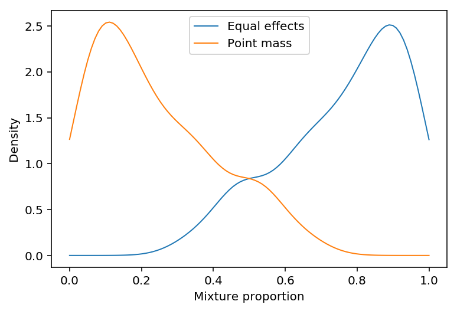